N+1 Problem
Perbaiki halaman kategori
- menambahkan deskripsi & memperbaiki halaman kategori dan halaman author dan halaman post ini mengarah ke view yang sama
- file view posts.blade.php untuk ketiganya
- buka routes web.php
- buka controller post / PostController.php
- kita simpan title nya diheadingnya
- buka file view posts.blade.php
- Hasil :
- kita bisa hapus view category.blade.php
- kelihatannya sudah ok bisa menampilkan post, author, category sebenarnya ada problem
- problemnya N+1 Problem
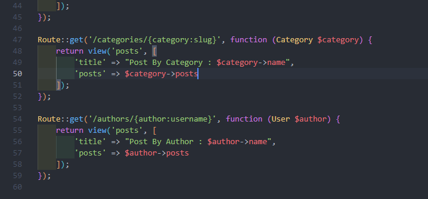
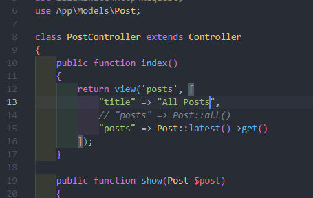
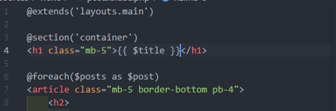
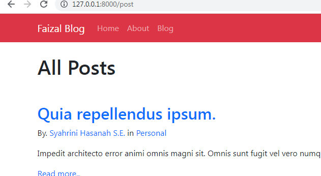
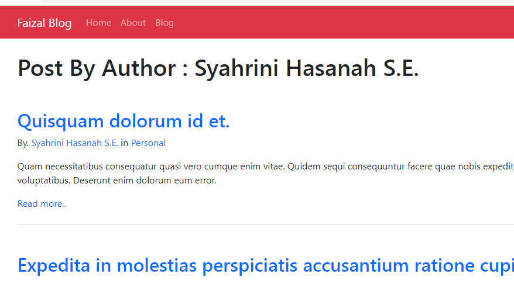
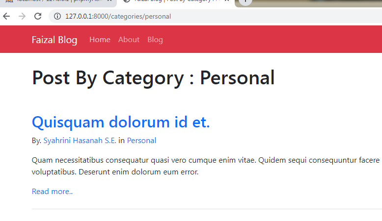
N+1 Problem
- N+1 Problem terjadi ketika apk kita mengambil data dari database, dimana didalamnya kita melakukan looping terhadap data kita
- kita akan melakukan pemanggilan ke database/ querynya berulang2
- apk nya itu yang harusnya hanya melakukan 2 query(query ke semua dan data yang ada didalamnya), malah akan menambahkan N query
- bakalan banyak banget querynya
Contoh N+1 Problem
- sebetulnya yang kita lakukan adalah menampilkan semua data postingan simple banget
- kita lihat dipostcontroller
- kita cuma melakukan 1x query, ambil semua data post, lalu urutkan dari yang terbaru
- masalah ketika melakukan looping dihalaman view postsnya
- kita melakukan looping terhadap semua postingan kita, kita butuh table lain
- ada table author dan category
- kita query lagi didalam looping
- problem : setiap kita melakukan query untuk mengecek authornya siapa itu melakukan pemanggilan terhadap database
- looping author dia connect ke database, query lagi kedatabase
- memanggil category query lagi
- padahal query yang dilakukan itu cuma 3 ambil semua postingan, ambil semua author, ambil semua category
- tapi ternyata tidak 3x, yang dilakukan adalah ambil semua psotingan 1x, setiap loopingnya ambil penulis, ambil category, looping lagi, ambil penulis, ambil category
- kita punya data didatabase 20 jadi : 20x ke tabel user + 20x ke table category = 40 query
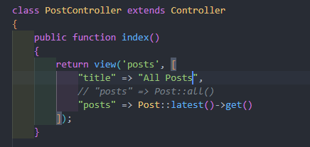

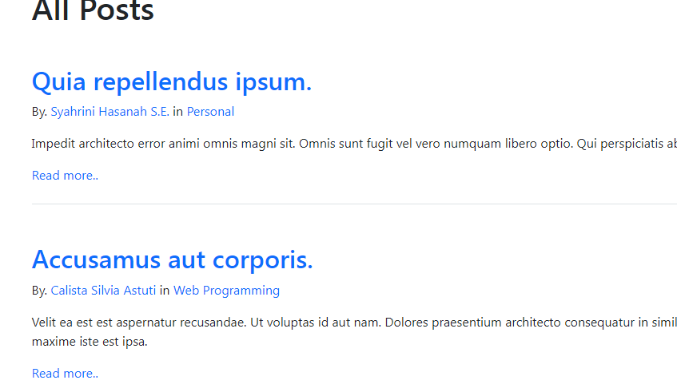
clockwork
- sebenarnya ini nilai default, karena yang terjadi dilaravelnya ketika kita membuat sebuah releasionship (hasMany, belongsTo), ketika kita melakukan looping di view posts.blade.php, laravel itu melakukan apa yang disebut dengan lazy loading : loadingnya males
- jadi ketika dibutuhin baru dilakukan
- solusi : kita bisa menggunakan library clockwork laravel
- library yang bisa kita install diapk laravel kita yang nantinya akan kita hubungkan ke sebuah extension dibrowser, untuk mengetahui sebenarnya apk php kita itu melakukan pemanggilan query berapa kali
- https://github.com/itsgoingd/clockwork
- kita install librarynya : pakai composer
- kita install extension dibrowser kita : klik titik 3 » more tools » extensions » Open Chrome Web Store
- kita cari clockwork/li>
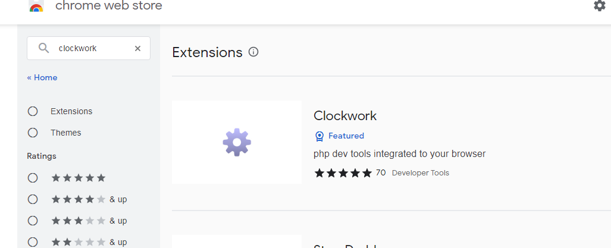
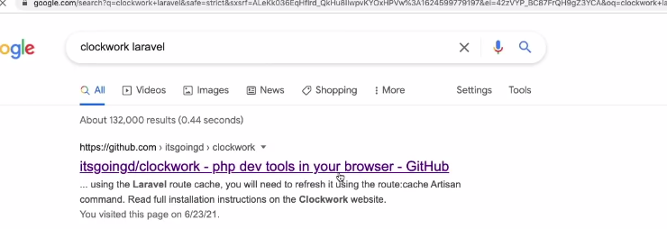
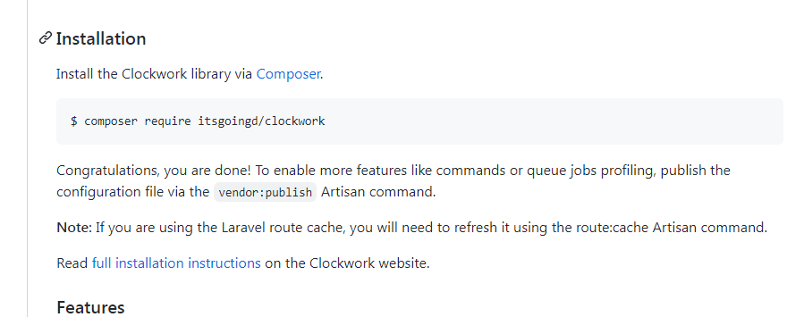
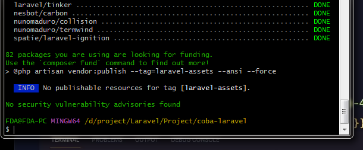
Cara menggunakan clockwork
- kita masuk inspect » clockwork » database
- kita melakukan query sebanyak 41x
- ini bisa kita persingkat
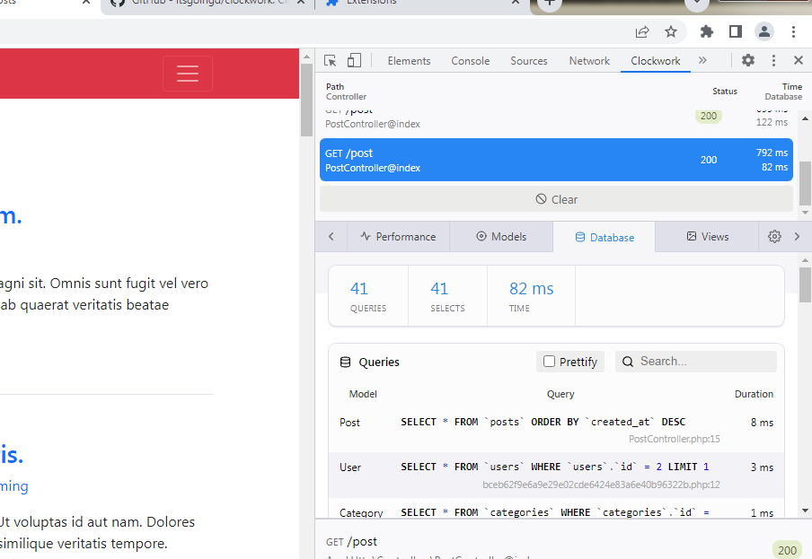
Eager loading
- Eager : semangat
- lakukan semua diawal sehingga kita sudah punya datanya
- jadi pada saat looping tidak perlu melakukan pemanggilan ke database lagi
- pada saat kita mengakses sebuah relationship pada saat eloquent (setiap pakai belongsTo, hasMany), maka model akan melakukan sebuah teknik yang namanya lazy loading
- artinya data relationship ini tidak diload / tidak dipanggil sampai kita mengakses propertynya
- tapi kita bisa meminta eloquent melakukan Eager loading ketika kita melakukan query pada parentnya, pada saat kita melakukan query dipostinganya
- dia akan mengquery langsung author dan categorynya
- eager loading ini dilakukan untuk menghindari N+1 problem
- dikasih contoh buku
- misal punya buku dan penulis
- kalo kita melakukan pengambilan data buku, nah ini problem
- jadi setipa 25 buku kita melakukan 26 query : 1 untuk buku, 25 untuk nama author
- untuk menghindari ini untungnya kita bisa menggunakan eager loading agar mengurangi operasinya hanya menjadi 2 query
- kita hanya tambahkan sebuah method yang namanya with
- kalo 2 :
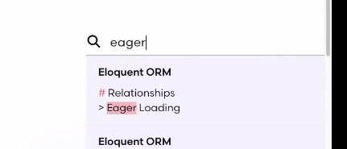
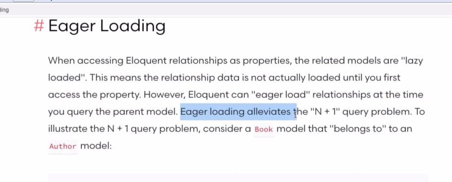
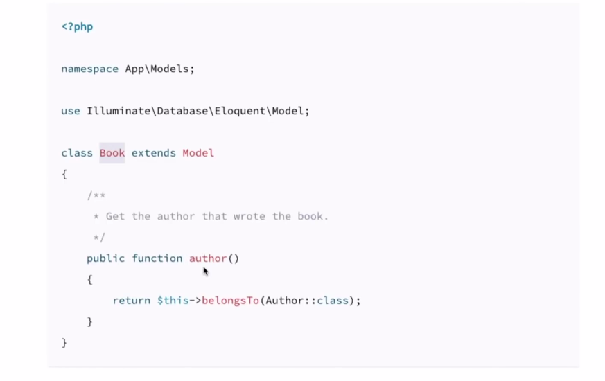
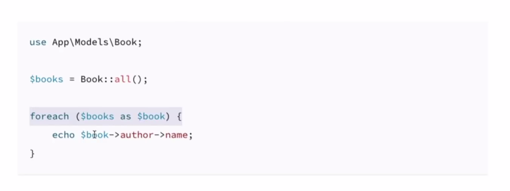
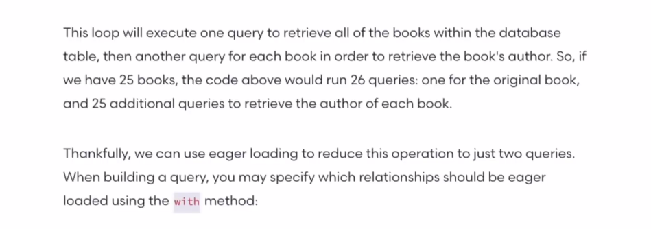
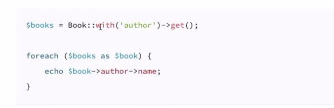
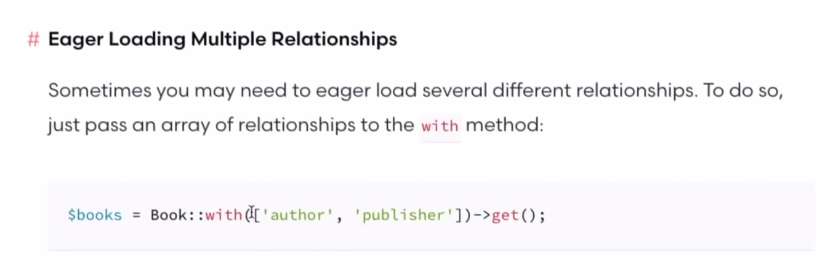
kita coba
- kita masuk ke PostController
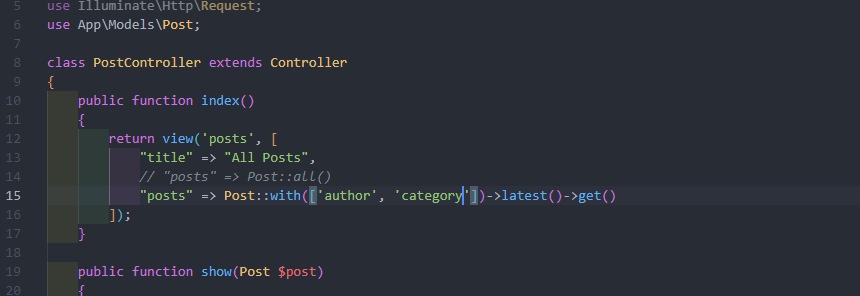
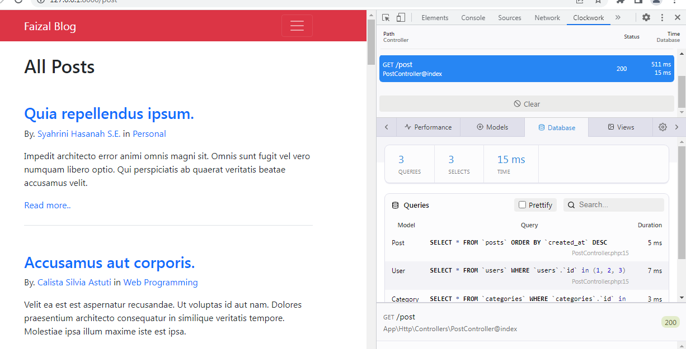
Problem ke 2
- ketika kita masuk ke author
- kita mengambil author tapi didalamnya ngikut postingan dan category
- ini juga bisa kita persingkat tapi caranya agak berbeda
- karena memang kalo misal kita balik ke web.php kita lihat di author
- karena menggunakan route model banding, jadi agak berbeda, karena kalo dipost controller itu tidak pakai routes model banding
- ini ada cara lain bukan pakai eager loading tapi pakai lazy eager loading
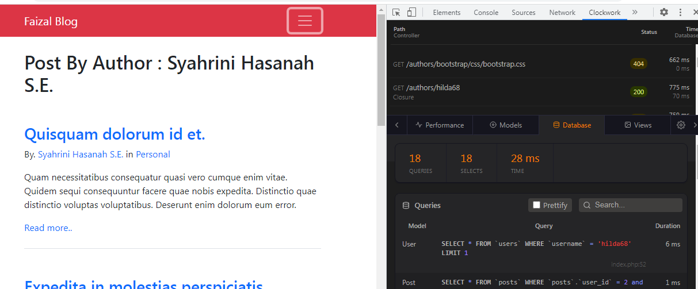
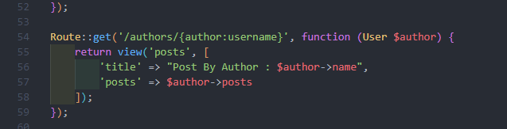
Lazy Eager Loading
- kadang2 kita butuh melakukan eager loading pada relationship kita tapi setelah siparent sudah didapatkan, jadi tidak sekalian diambil
- kita pakai load
- kita buka web.php
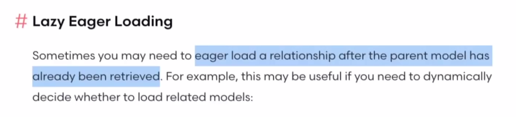
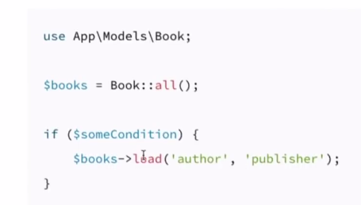
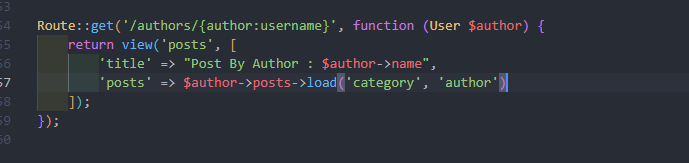
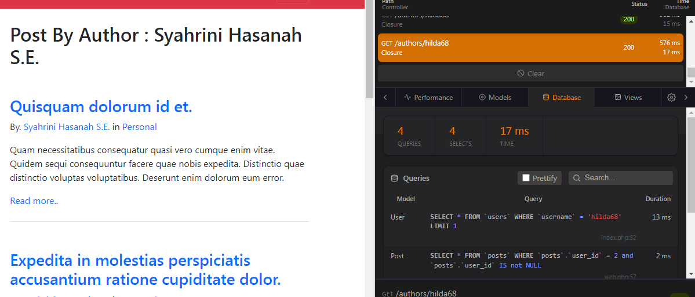
Memperbaiki category
- kita tambahkan load di web.php
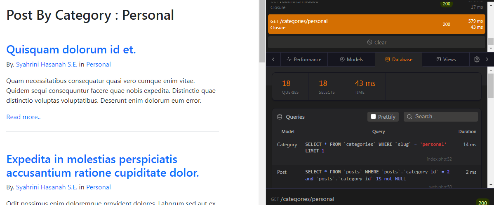
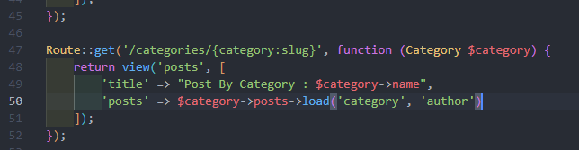
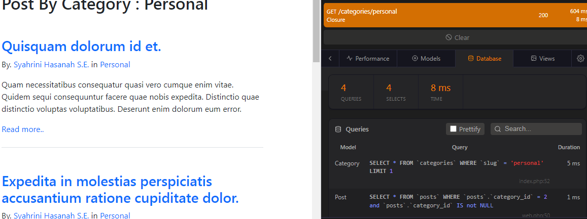